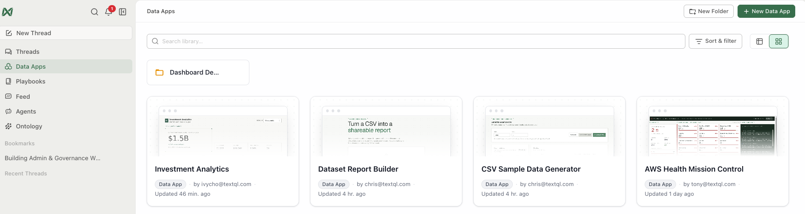
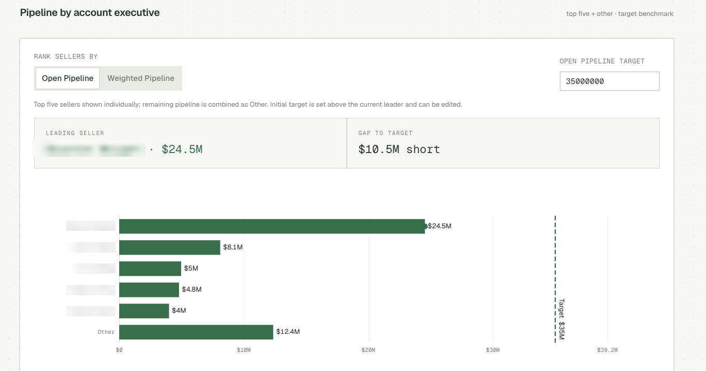
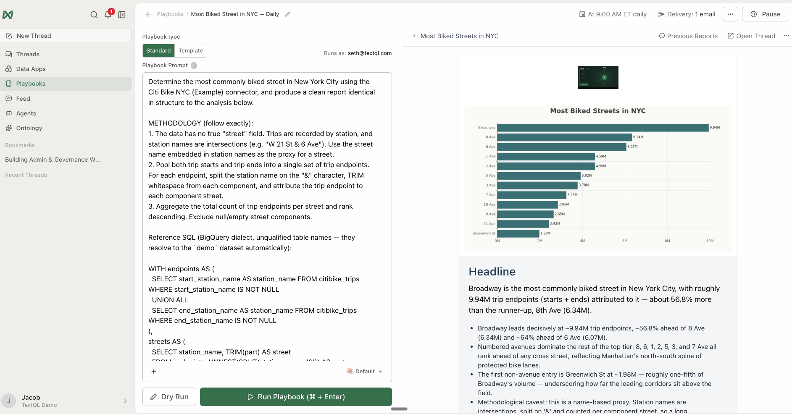
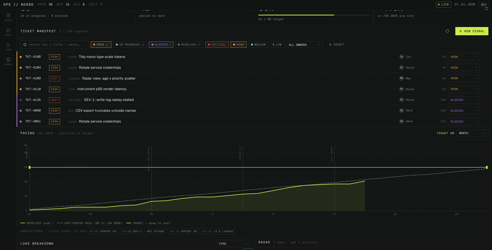
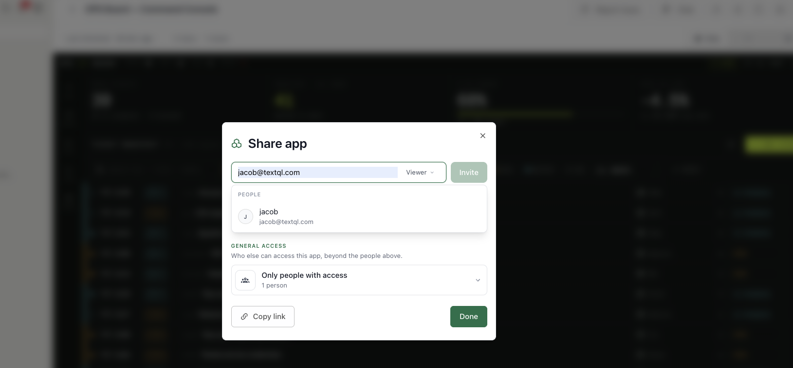

Dashboards & Reporting
A hands-on workshop for anyone who turns analysis into something others consume: charts that communicate, polished reports, and live interactive dashboards — built entirely through conversation, then published, shared, refreshed, and maintained like real products.
It's structured as short, hands-on modules, each with a clear goal, copy-paste prompts, what you'll see, and a checkpoint before moving on. Total time: about 2 hours.
Assumes basic fluency asking and refining questions with Ana — Self-Service Analytics (Modules 1–2) covers it. For automating delivery of what you build here, see the Automation Deep-Dive.
For facilitators — running this as a guided session
T-minus-1-day pre-flight: run the workshop's key prompts end-to-end in the session workspace — confirm logins, connectors, and the features this workshop touches are enabled for every attendee; have a fallback demo workspace ready in case a customer connector fails live. Pacing: when a long prompt is running (2–4 min), fire it first, then discuss the concept while Ana works — never watch a spinner in silence. If behind schedule, cut sections marked optional, never the checkpoints. Group sessions: attendees drive, you narrate; collect every miss or wrong answer in a shared doc — that list is the ontology backlog. With 10+ attendees on one warehouse, stagger the heavy prompts.
🤖 Prefer to have Ana run this workshop?
Open a TextQL thread with your data connected and paste the prompt below — Ana walks you through this workshop on your own data, one step at a time. You run each prompt; she coaches.
Hey Ana — facilitate the "Dashboards Reporting" workshop with me in this thread, on the data connected here. Pull the steps from https://textqllabs.github.io/workshops/dashboards-reporting/ and run it interactively: look at my data first (2–3 lines), then go ONE module at a time. For each module, give ME the prompt to copy and run as my next message, tell me what to look for, then wait and coach me on my result. Start with what you see, then Module 0.
Ana fetches the steps from the link — no copy/paste of the workshop needed. (Air-gapped / VPC tenants where Ana can't reach the web: paste the module list from this workshop's ana-runner.md instead.)
The Output Landscape
Goal: know the four output formats, when each one wins, and get your environment ready for the rest of the workshop.
0.1 · Four ways to ship an answer
Everything you produce with Ana lands in one of four formats. Choosing the right one before you build saves the rework:
| Format | What it is | Lives | Best for |
|---|---|---|---|
| In-thread chart | Interactive chart inside the conversation | With the thread | Exploration; answering one question well |
| Report | Structured narrative — summary, charts, takeaways, methodology | Thread / PDF / HTML file | Point-in-time story for leadership; "what changed and why" |
| Dashboard | Persistent interactive app — filters, tabs, scheduled refresh | Dashboards page | Numbers people check repeatedly; self-serve exploration |
| Export | CSV / Excel / image files | Downloads | Feeding spreadsheets and decks |
The two heavyweights are reports and dashboards, and the distinction mirrors playbooks vs dashboards in the product:
| Report / Playbook | Dashboard | |
|---|---|---|
| Purpose | Deliver insights to you | Let you explore yourself |
| Output | Narrative with analysis | Interactive app with filters |
| Execution | Fresh analysis each run | Same published code, reliably, every refresh |
| Ask | "Tell me what changed and why" | "Give me a live view I can filter" |
Rule of thumb: if the consumer will ask *follow-up questions of the data*, build a dashboard. If they want *your interpretation*, write a report. If they ask every week, schedule it (playbook for reports — see the Automation workshop; refresh schedule for dashboards — Module 4).
0.2 · Get ready
Three prerequisites for the hands-on modules:
- A connected data source — any warehouse connector or even an uploaded file works. (No data yet? Run the Connect Your Data workshop first, or upload a CSV.)
- Dashboards enabled — admin-only, once per org: Settings → Capabilities → Enable Dashboards. If you don't see the Dashboards entry in the sidebar by Module 3, this toggle is why.
- A working dataset in mind — pick one table or domain you know well (sales, tickets, usage). You'll reuse it through every module; familiarity is how you'll judge whether outputs are correct, not just pretty.
0.3 · Calibrate
From [your dataset], give me one number worth tracking weekly, one comparison worth showing side by side, and one breakdown worth filtering. For each, say which output format you'd recommend — chart, report, or dashboard — and why.

✅ Checkpoint
Charts That Communicate
Goal: move from "make a chart" to directing visualizations — type, scope, annotation, and comparison framing — so the chart carries the message without you in the room.
1.1 · Baseline chart, then take control
Show me [your metric from 0.3] by [week/month] for the last 12 months as a chart.
Remake that as a [bar/line/area] chart. Sort [descending/by time]. Show only the top [8] categories and group the rest as "Other". Add a target line at [value] and label the periods where we missed it.
The vocabulary that works: chart type (bar, line, stacked bar, area, scatter, heatmap, histogram, box plot, map), scope (top N + Other, date windows, filters), scales (log scale, dual axis — use sparingly), annotations (target lines, event markers, callout labels).
1.2 · The comparison frame
A number means little without its comparison. Make the frame explicit:
Chart [metric] this quarter vs last quarter side by side, by [dimension]. Make the change visible: add the percentage delta as a label on each pair, and order by the size of the change — biggest mover first.
1.3 · Distribution, not just averages
Show the distribution of [value per record — e.g., order size, ticket resolution time] as a histogram. Mark the median and the 90th percentile. Is the average misleading here?
1.4 · Small multiples beat busy charts
When one chart gets crowded, split it:
Instead of one chart with 12 lines, make a grid of small charts — one per [region/product] — each showing [metric] over time with the same y-axis scale, so they're comparable at a glance.
1.5 · Annotate for the absent reader
The chart will travel without you. Bake the story in:
Annotate that chart for someone with no context: title that states the takeaway (not the metric name), a marker on [the event — launch, price change, outage], and a one-sentence caption summarizing what to conclude.
1.6 · Honesty checklist
Before any chart ships, ask Ana to self-audit:
Review this chart for honesty: does the y-axis start at zero (and if not, is that justified)? Are scales comparable across panels? Is anything excluded that a reader would assume is included? Would a skeptic call this misleading?

✅ Checkpoint
Reports: Narrative Outputs
Goal: turn analysis into documents people actually read — executive-summary-first reports, branded PDFs, and standalone interactive HTML files.
2.1 · The report skeleton
Good data reports share one shape. Ask for it explicitly:
Turn this thread's analysis into a report with this structure: (1) Executive summary — three bullets max, findings not descriptions; (2) The headline number with its comparison; (3) Key charts, each with a one-paragraph takeaway underneath; (4) What we should do — up to three recommendations with owners; (5) Methodology appendix — sources, definitions, filters, time windows.
2.2 · Formats: PDF and slide deck
Produce that report as a PDF I can attach to an email. Keep it under [6] pages, charts embedded.
For meetings:
Make a slide version instead: title slide, one slide per key finding (chart + takeaway), one recommendations slide.
2.3 · Standalone interactive HTML reports
Between a static PDF and a full dashboard sits a powerful middle ground: a self-contained HTML file with working filters — no TextQL login needed to view it, sendable as an attachment.
Build this analysis as a standalone interactive HTML report: [metric] by [dimension] with a dropdown filter for [segment] and a date-range toggle. All data embedded in the file, working offline, openable in any browser.
Know the tradeoff: the data is *frozen at generation time* and embedded in the file. Treat it like a PDF with filters — regenerate to update, and don't embed data the recipient shouldn't keep.
2.4 · Branding and theming
Reports your org sends repeatedly should look like your org:
- Org logo and theme: Settings → Appearance (admin) — logo upload and the playbook/report Theme Editor for colors, backgrounds, and styling.
- Per-report, you can also just ask: "Use our brand colors: primary #..., accent #...; sans-serif headers."
2.5 · The recurring report decision
If you'll send this same report weekly, don't regenerate by hand. Two paths, covered fully elsewhere — know which fits:
| Need | Path |
|---|---|
| Same narrative analysis, fresh data, delivered on schedule | Playbook → Automation workshop |
| Live view recipients explore themselves | Dashboard → next module |

✅ Checkpoint
Build Your First Dashboard
Goal: build a real interactive dashboard through conversation — layout, filters, KPI cards, tabs — and iterate it to done.
Requires Enable Dashboards (Settings → Capabilities; admin, once per org). Dashboards are in Public Preview — interfaces may evolve.
3.1 · Two ways in
- Describe it from scratch — open a chat and ask for the dashboard you want.
- Switch an existing analysis — in any chat: Output Format (chat toolbar) → Dashboard. Ana re-renders her response as an interactive Streamlit application instead of a chat reply.
Start from scratch this time, using your Module 0 building blocks:
Build a dashboard for [your domain] with: (1) a KPI row at the top — [your weekly number] with week-over-week delta, plus [2–3 supporting numbers]; (2) [your comparison] as the main chart; (3) [your breakdown] as a table sortable by the main metric; (4) filters for [date range] and [your dimension] that apply to everything.
3.2 · Iterate conversationally
The first version is a draft. Refine it the same way you'd refine any answer:
Prompt (run several, one change at a time):
Add a tab called "Detail" with the full record-level table, filterable. Change the main chart to a line chart and add a 4-week moving average. Make the KPI cards show red/green based on direction vs last period. Default the date range to the last 90 days.
3.3 · Build from a screenshot
Have a layout you already like — from a slide, an old BI tool, even a sketch?
Do: attach the screenshot / PDF / sketch to the chat.
Rebuild this dashboard connected to our data: match the layout and chart types, map each panel to the closest equivalent in [your dataset], and tell me which panels you couldn't map.
3.4 · Design for the consumer
Three rules that separate dashboards people use from dashboards people ignore:
- Answer-first layout — the number someone came for goes top-left. KPI row, then the explaining chart, then the detail table. Nobody scrolls for the headline.
- Filters that match questions — every filter should correspond to a question a real viewer asks ("what about my region?"). Filters nobody uses are clutter; a missing region filter is a support ticket.
- Five-second test — a first-time viewer should know what they're looking at, what's good/bad, and what changed, in five seconds. If they can't, the dashboard needs fewer panels, not more.
Prompt (the self-audit):
Review this dashboard against three rules: is the most important number top-left? Does every filter map to a question a real viewer would ask? Would a first-time viewer pass the five-second test? Suggest specific changes.
3.5 · Check the numbers before anyone else sees them
A wrong dashboard is worse than no dashboard:
Before I publish: recompute the headline KPI directly with a fresh query, independent of the dashboard's data source, and confirm they match. Then list every filter and confirm each actually changes the data shown.

✅ Checkpoint
Publish, Share & Operate
Goal: take the dashboard from draft to published product: visibility, refresh schedule, versioned edits and rollback, and the ownership habits that keep it trustworthy.
4.1 · Publish
Click-path: in the dashboard view → Publish dropdown → Publish Now
Publishing does two things: makes the dashboard persistent and accessible from the Dashboards page (left sidebar), and creates a version checkpoint you can roll back to. Drafts stay private to you until published.
The Dashboards page organizes everything into:
| Tab | Contents |
|---|---|
| My Dashboards | Yours, published as personal |
| Team Dashboards | Published and shared across the org |
| Drafts | Work-in-progress, unpublished |
4.2 · Decide visibility deliberately
Visibility is controlled by the creator: personal dashboards are visible only to you; team dashboards are visible to members with appropriate access. Underneath, dashboard access follows your org's RBAC (dashboard read / write permissions — Admin workshop, Module 2) and your data layer's rules: if the underlying connector has RLS policies, they apply to dashboard queries automatically.
Two viewers can legitimately see different numbers on the same dashboard if row-level security scopes them differently. That's a feature — but tell your viewers, or you'll get "the dashboard is wrong" tickets that are actually RLS working.
4.3 · Schedule refreshes
A published dashboard re-executes its queries only when refreshed:
Click-path: open the published dashboard → Schedule → set frequency (hourly / daily / weekly)
Manual refresh: the refresh icon in the toolbar — hover shows last-refresh time.
Match the schedule to the data, not to ambition: a dashboard on a warehouse that loads nightly gains nothing from hourly refresh except compute spend. State the refresh cadence on the dashboard (a caption like "Data refreshes daily, 6am ET") — it preempts the most common viewer confusion.
4.4 · Edit with versions, roll back without fear
To change a published dashboard:
- Open it → Chat (or Chat with Dashboard) — you're back in a conversational session
- Make the changes
- Publish → Publish Now — this creates a new version
To see or restore old versions: Publish → History.
Make one small edit to this dashboard: append "(edited)" to the main chart's title.
Do: run the edit above in your Module 3 dashboard's chat, publish it, open History, and roll back. Knowing the rollback works before you need it is the difference between calm and panic when a Friday edit breaks the exec dashboard.
4.5 · The owner's habits
A published dashboard is a product with users. The maintenance contract:
- Name an owner — in the description: owner, purpose, refresh cadence, source. Orphaned dashboards rot silently.
- Watch for drift — when the schema changes upstream, the dashboard's queries can break or, worse, silently mislead. Wire dashboard checks into your release process (Connect Your Data workshop, Module 6).
- Prune — a quarterly pass: anything unused, superseded, or wrong gets archived. Ten trusted dashboards beat fifty stale ones.
List the dashboards I own, when each was last refreshed and last meaningfully viewed if available, and flag candidates for archiving.

✅ Checkpoint
Data Sources & Performance
Goal: understand the data source layer under every dashboard — the four types, reuse across dashboards, and the design choices that decide whether a dashboard loads in one second or forty.
5.1 · What a data source is
Dashboards don't query ad hoc — they're powered by named, reusable data sources that Ana creates and wires up when she builds for you. A data source encapsulates how data is fetched, so the same query or file can feed multiple dashboards without duplication.
| Type | What it is | Reach for it when |
|---|---|---|
| SQL Query | A SQL statement against one of your connectors | The workhorse — most dashboard panels |
| File | An uploaded dataset (CSV, Excel) | Reference data, targets/budgets, one-off enrichments |
| Python Code | A script that fetches or transforms data | API pulls, multi-step transforms SQL can't express |
| Ontology SQL | A query against your governed ontology | Metrics that must match the org-wide definition |
Permissions: members create and edit their own data sources; admins see and edit all of them. Data sources can be tested before a live dashboard depends on them.
When a governed definition exists, prefer Ontology SQL for headline KPIs. A dashboard that computes "active users" its own way is how two dashboards end up disagreeing in the same meeting — exactly what the ontology exists to prevent.
5.2 · See what's under yours
For the dashboard I just built: list its data sources — name, type, and which panels each one feeds. Is anything fetched twice that could be shared?
5.3 · Push work into the query
The single biggest performance lever: aggregate in SQL, not after. A panel showing monthly totals by region needs maybe 200 aggregated rows — not 2 million raw rows aggregated at render time.
Review my dashboard's data sources for performance: for each, does the query return pre-aggregated data at the granularity the panel displays, or raw rows? Rewrite any raw-row sources to push the aggregation into SQL — without changing what any panel shows. Confirm the numbers match before and after.
- Never "fix" performance by truncating. A
LIMITslipped into a source silently drops rows and corrupts every total downstream. Filter on business-meaningful ranges (dates, segments) — complete slices, not arbitrary subsets. - Keep filterability. If viewers filter by region, the source must keep region as a column — aggregate to the panel's granularity including its filter dimensions, not past them.
5.4 · Granularity and the filter contract
For each filter, decide where it's applied:
| Filter style | How it works | Cost profile |
|---|---|---|
| In-memory | Source fetches the full slice; filter narrows it client-side | Fast interactions; heavier initial load |
| Live query | Filter re-queries the warehouse with the selection | Light initial load; each interaction hits the warehouse |
Small aggregated slices (thousands of rows) → in-memory is ideal. Big or wide data → live-query filters, with the warehouse doing the narrowing. Say which you want when it matters:
The date-range filter should re-query the warehouse on change rather than loading all history up front. The region filter can stay in-memory.
5.5 · Reuse across dashboards
Because sources are named and centrally managed, your second dashboard should reuse the first one's sources where they overlap:
I'm building a second dashboard for [adjacent audience]. Which existing data sources can it reuse as-is, which need a variant, and which are genuinely new?
✅ Checkpoint
Troubleshooting Clinic
Goal: diagnose the recurring dashboard failure modes yourself — in order of how often they actually happen.
6.1 · "The data is stale"
The most common complaint, with a fixed diagnosis order:
- Is a refresh schedule set at all? Open the dashboard → Schedule. No schedule = data frozen at publish time.
- Did the last refresh succeed? Hover the refresh icon for last-refresh time; trigger a manual refresh and watch.
- Is the connector healthy? A failing source connector fails every dashboard on it (Connect Your Data workshop, Module 6).
- Is the warehouse itself stale? If upstream ETL loads nightly and broke, the dashboard faithfully shows old data. Check the source table's own freshness:
Query the underlying table directly: what is the max [timestamp column]? Does it match what the dashboard's last-refresh implies it should be?
6.2 · "The dashboard is blank / broken"
- Blank after an edit → roll back: Publish → History → restore the last good version. Diagnose in chat afterward, calmly.
- Blank for one viewer, fine for others → permissions or RLS: they may lack access to the underlying source, or row-level security legitimately scopes them to zero rows.
- Broken after a schema change upstream → a renamed/dropped column breaks the source's query. Re-open the dashboard chat:
This dashboard broke after a schema change. Check each data source's query against the current schema, list what no longer resolves, and propose the minimal fix.
6.3 · "Filters don't work"
Three distinct causes that present identically:
| Cause | Tell | Fix |
|---|---|---|
| Filter not wired to a panel | Some panels respond, one doesn't | Ask: "wire the [X] filter to the [Y] panel too" |
| Source aggregated past the filter dimension | Filter changes nothing anywhere | Module 5.3 — re-aggregate keeping the dimension |
| Filter value mismatch | Filter shows options but selecting yields empty | Values in the filter don't match values in the data (case, whitespace, codes vs names) — ask Ana to compare distinct values |
6.4 · "Two dashboards disagree"
The trust-killer. The diagnosis is always definitional:
Dashboard A says [X] for [metric]; dashboard B says [Y] for the same period. Compare their data sources: different tables? different filters (test data, refunds, internal users)? different time-zone handling? different metric definitions? Give me the exact divergence.
6.5 · "It's slow"
In order of likely impact: raw-row sources aggregating at render (Module 5.3) → too many panels on one page (split into tabs) → filters re-querying when in-memory would do, or vice versa (Module 5.4) → warehouse-side slowness (queue, warmup — Connect Your Data workshop).
6.6 · When it's not the dashboard
Escalate with evidence, not vibes. Capture: dashboard name and version, what you expected vs saw, last-refresh time, whether manual refresh reproduces it, and whether the underlying source queries run correctly in a fresh chat. That package turns a "dashboards are broken" ticket into a five-minute fix — and admins can see org-wide dashboard health in Observability (Admin workshop, Module 5).
🎓 You're done
You can direct charts that carry a message, ship reports people read, build and publish dashboards people trust, design the data source layer underneath for speed and reuse, and fix the failure modes yourself.
Where to go next
- Make recurring reports deliver themselves — the Automation workshop (playbooks + feed agents)
- Get headline metrics governed so dashboards can't disagree — the ontology workshop
- Browse the Design Patterns reference (the final section of this workshop) for ready-to-adapt dashboard layouts
✅ Checkpoint
Design Patterns
Ready-to-adapt dashboard and report patterns. Each has the prompt to build it and the design reasoning. Replace [brackets] with your data.
1 · The Executive Overview
When: leadership wants one page, weekly, five seconds to status.
Build an executive overview dashboard: a KPI row with [revenue, active customers, churn rate, pipeline] each showing current value and delta vs last period with red/green direction; below it, one trend chart of [primary metric] over 12 months with target line; below that, a table of [top 10 accounts/segments] by [metric] with change column. Date-range filter only — executives don't want twelve filters. Default to last quarter.
Why it works: answer-first layout, single restrained filter, deltas everywhere — status without reading.
2 · The Operational Monitor
When: a team runs a process (support queue, pipeline, fulfillment) and checks it daily.
Build an operational monitor for [process]: top — today's intake vs daily average, current backlog, oldest item age; middle — daily volume in and out for the last 30 days as paired bars; bottom — the live work table: every open [item] with age, owner, status, sortable, filterable by [owner] and [status]. Refresh hourly; show last-refresh time prominently.
Why it works: the table is the product — the charts exist to contextualize it. Hourly refresh matches operational tempo.
3 · The Comparison Board
When: the recurring question is "which [region/rep/product] is ahead, and who moved?"
Build a comparison board for [dimension]: small-multiples grid, one panel per [dimension value], same y-axis scale, each showing [metric] over time; a leaderboard table ordered by current period with rank-change indicators; filter for [time window]. Order panels by current value descending.
Why it works: same-scale small multiples are the honest comparison; rank-change is the narrative.
4 · The Funnel View
When: a staged process (signup → activation → conversion; lead → close) needs conversion visibility.
Build a funnel dashboard for [process]: the funnel chart with stage-to-stage conversion percentages labeled; a cohort table — rows are [weekly/monthly] cohorts, columns are stages, cells are conversion rates, heat-colored; filters for [acquisition source/segment]. Add a callout for the biggest stage-drop this period vs last.
Why it works: the labeled stage-drops are where decisions live; cohort rows separate "we got better" from "the mix changed."
5 · The Deep-Dive Companion
When: a report answers "what changed" but reviewers immediately ask "show me underneath."
Build a two-tab dashboard companion to the [name] report: tab 1 "Summary" mirrors the report's key charts; tab 2 "Explore" has the record-level table with every relevant column, filterable by all major dimensions, plus a chart that responds to those filters. Link the report and dashboard in both descriptions.
Why it works: the report stays a tight narrative; the dashboard absorbs the follow-up questions.
6 · The Board-Pack HTML
When: external or exec audiences who won't log in; data must travel.
Build a standalone interactive HTML report: [the quarter's key metrics] with takeaway-titled charts, a dropdown filter for [business unit], all data embedded, working offline. Brand it: [logo/colors]. Keep it under [2] MB.
Why it works: PDF portability with just enough interactivity; nothing to provision. Remember the data is frozen at generation — date-stamp it.
Anti-patterns to refuse
| Anti-pattern | Why it fails | Instead |
|---|---|---|
| The Everything Dashboard (30 panels) | Nobody can find the answer; slow | Split by audience or into tabs; five-second test |
| Mixed y-axis small multiples | Visually lies about comparisons | Same scale, always |
| Filter farm (10+ filters) | Decoration nobody uses; each one a maintenance liability | Filters = questions real viewers ask |
| Raw-row sources | 40-second loads | Aggregate in SQL at panel granularity (Module 5.3) |
| LIMIT as a performance fix | Silently corrupts every total | Business-meaningful slices only |
| Self-computed headline KPIs | Dashboards disagree in the same meeting | Ontology SQL for governed metrics |
| Metric-name chart titles | Reader does the interpretive work | Takeaway titles ("Churn isolated to March cohort") |